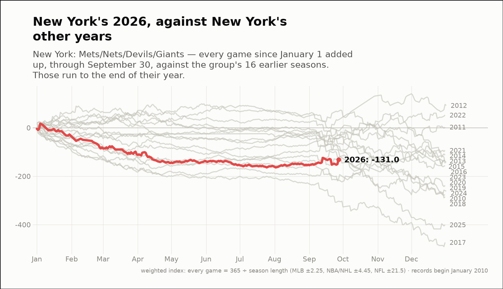
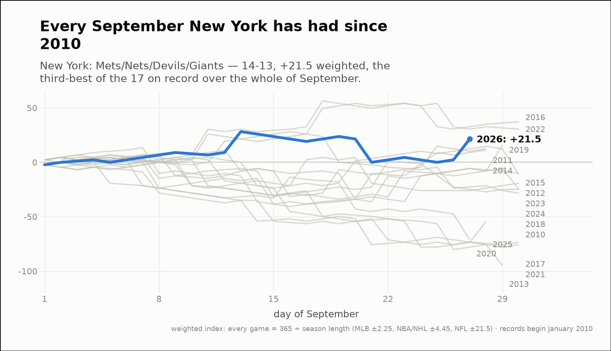
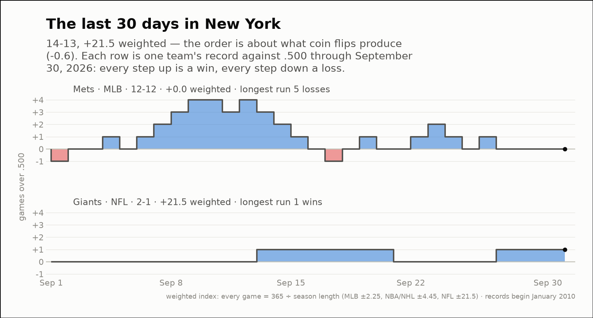

City of the day — New York
New York: Mets/Nets/Devils/Giants
- 2026 so far
- 108-152, -131.0 weighted over 260 games; longest run 10 straight losses
- Order of results
- about as clumped as coin flips (-1.1)
- Earlier seasons (full-year weighted)
- 2010 -277.7, 2011 +2.7, 2012 +92.0, 2013 -134.5, 2014 -112.7, 2015 -139.6, 2016 -143.1, 2017 -473.5, 2018 -284.8, 2019 -238.3, 2020 -156.5, 2021 -93.4, 2022 +52.3, 2023 -147.0, 2024 -261.8, 2025 -400.8
- Last 30 days
- 14-13, +21.5 weighted; longest run 4 straight wins
- Window opens
- September 1, 2026
- September 2026
- 14-13, +21.5 weighted — the third-best of the 17 on record
- Same September in earlier years
- 2010 -28.2, 2011 +12.5, 2012 -11.3, 2013 -94.9, 2014 +11.3, 2015 -10.2, 2016 +37.2, 2017 -73.4, 2018 -24.9, 2019 +15.8, 2020 -71.2, 2021 -75.7, 2022 +30.5, 2023 -19.2, 2024 -24.9, 2025 -54.2
| Team | Last 30 days | Weighted | Longest run |
|---|---|---|---|
| Mets | 12-12 | +0.0 | 5 straight losses |
| Giants | 2-1 | +21.5 | 1 straight wins |


